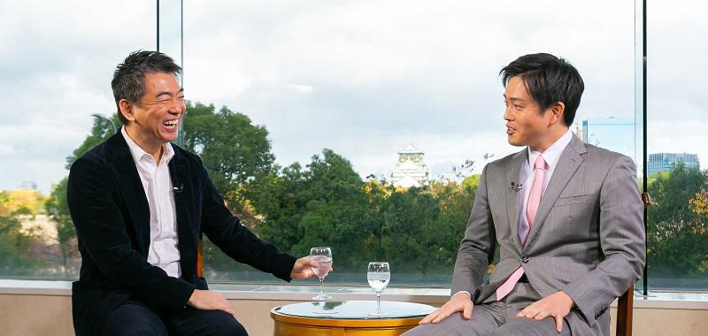
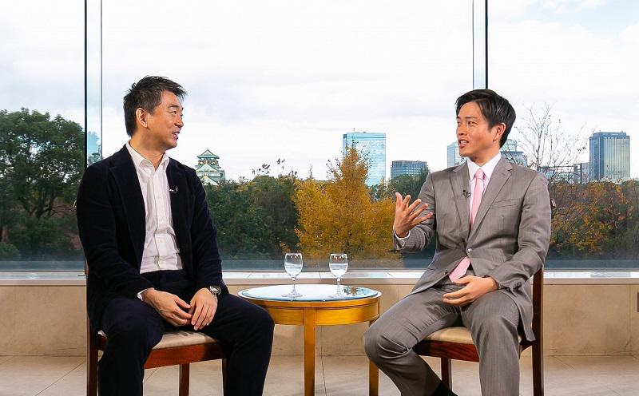

【対談】吉村洋文×橋下徹 橋下徹、松井一郎両氏の跡を継ぎ、大阪府知事に就任した吉村洋文氏。これまで大阪市議、国会議員、大阪市長を務め、大阪・関西万博誘致に奔走した。若きリーダーの目指す未来とは──。
ゲスト 吉村洋文
１９７５年、大阪府生まれ。大阪府立生野高校、九州大学法学部卒。弁護士。2011年に大阪市議会議員、14年衆議院議員、15年大阪市長、19年４月に大阪府知事に当選。都道府県知事では２番目に若い。
橋下徹、松井一郎両氏の跡を継ぎ、大阪府知事に就任した吉村洋文氏。これまで大阪市議、国会議員、大阪市長を務め、大阪・関西万博誘致に奔走した。若きリーダーの目指す未来とは──。

橋下徹（以下、橋下）
本日は吉村洋文大阪府知事にお越しいただきました。今日はガンガンいきます。市長から知事になって半年以上過ぎたけど、仕事に違いはある？
吉村洋文（以下、吉村）
（政令指定都市の）市長と知事って、重なる仕事が７割ぐらいありますね。市長時代に経験した仕事がたくさんある。
橋下
やるとわかるよね。知事と市長って併存する必要があるのかって。
吉村
何するにしても、僕と松井（一郎）さんがすり合わせなきゃならない。先日、東京の小池百合子知事に大阪に来てもらって、大都市同士で連携しようという話になったんですが、あっちは１人なのに、大阪は２人おらんと進まない。制度の欠陥と感じています。
橋下
大都市東京のリーダーが小池さん一人なのにね。吉村さんは市議会議員と国会議員をやってから、市長と知事を経験している。このキャリアってすごいよね。辞めたらコメンテーターに引っ張りだこだよ。夕方の情報番組で政治に文句言ったらいい（笑）。
吉村
橋下さんが今やってる無責任なコメンテーターですね（笑）。大阪の市と府の二重行政の問題は、選挙制度が原因だと感じています。市議会議員の選挙は行政区から選ばれるから、選出された議員は地元ばかりに目が向いて、大阪全体に必要なことに関心が向きにくい。府議会のほうは逆に「市内のことは、市でやって」という意識が強すぎるんですよね。自分らの仕事は大阪市の域外だ、と考えてる。橋下さんが知事になって「府は市も含めた大阪全体に責任を持つ」という姿勢を打ち出しましたけど、もっと根付かせないといけない。
橋下
２０１５年５月17日の都構想を巡る住民投票に負けて、僕は市長も政治家も辞めたわけだけれど、その後に吉村さんに市長を継いでもらった。僕がいろんなことを散らかしっぱなしにした後だから、苦労したでしょう。
吉村
いやもう全部ですよ、えらい目にあいました。
橋下
ははは。
吉村
橋下さんが辞める直前は、議会に全部の議案を否決されてたから、どこから手をつければいいかもわからなかった。
橋下
僕と吉村さんが全然違う政治グループだったら議会で否決されていても問題なかったろうけど、同じ方向を目指してたからね。可決に持っていかなきゃならないもんね。でもそれを吉村さんは、まとめていってくれた。
吉村
いやあ、血が滲むような我慢と忍耐の結果ですよ。橋下さんが改革の土台を作って、方向性がはっきりしてたのはやりやすかったですけどね。
■ 大阪万博誘致の成功 その舞台裏とは

橋下
改革のなかで効果が大きかったのは何？
吉村
たくさんありますが、大阪メトロの民営化を実現したことですね。
橋下
民営化してどうですか。
吉村
まず一人ひとりの職員が「サービスを良くしよう」と意識するようになっています。暗くて無機質だった駅の構内をきれいにデザインしたり、かなり変わってきています。梅田駅にはギネスに認定された40㍍の広告が打てるデジタルサイネージがつきました。将来は万博で延伸する夢洲に、大阪メトロの拠点となるターミナル駅を造る計画です。
橋下
ＪＲと阪急は梅田が拠点で、南海もなんば、近鉄も天王寺にターミナルがあるからね。
吉村
だから大阪メトロにも夢洲に拠点をつくれって言ったんです。あと重視したのはトップ人事。株は大阪市が持ちますが、経営は民間に任せて代表取締役にパナソニックの専務をやっていた河井英明さんに就任してもらいました。巨大企業を束ねてきた経験を活かして、民間の感覚で経営してもらっています。さっそく改革が始まっていて、25年には顔認証による改札通過を実現する予定です。登録した人は、ＩＣカードなんかを持たずに、地下鉄の改札をすっと通れるようになります。
橋下
大阪が全国で初めて顔認証をやるのはいいね。
吉村
大阪メトロにはバス事業もあるし、地下鉄とバスとレンタル自転車、タクシーも組み合わせて、出発地から目的地まで一気通貫でデジタル決済できるシステムをつくろうとしています。
橋下
ほかにも僕が散らかしたまま去った案件は、府立大学と市立大学の統合とか、府と市の港湾施設の統合管理とか、府立病院と市民病院の問題とか、いろいろあった。
吉村
衛生とか工業系の研究所がバラバラだったのも一つにまとめました。変えられなかったのは水道ですね。「水は命のインフラ」と言われて否決されて、道半ばです。
橋下
それ以外はほぼ実現しちゃったからね。問題にしていた市と府の二重行政を、吉村さんが次々にまとめてくれた。25年の万博も決めたし、テープカットは吉村さんがやらないとあかんね。
吉村
ははは。万博は成功させたいですね。誘致活動ではえらい目にあいましたよ。
橋下
よくあれ持ってこられたよね。あんなぺんぺん草が生えてる埋立地に。
吉村
言い出しっぺじゃないですか（笑）。誘致のために世界中あちこち行きまして、いろんな体験をしましたよ。カザフスタンで馬乳酒出されたり......飲んだことありますか？
橋下
ないない。
吉村
木の器に入って白いんですけど、獣の毛が浮いてて、馬の臭いがするんですよ。馬肉の臭いじゃないですよ。馬のおっぱいから直接、乳飲むようなもんです。
橋下
ははは。
吉村
「健康にいいから飲め」って現地のお偉いさんが言うんですけど、「普段から飲んでるの？」と聞いたら「ここまで本格的なのは病院でしか飲めない」って（笑）。宴席だから飲まないわけにいかなかったけど、日本人にはあれは無理です。
橋下
偉いね、でもそれで一票とれたんやね。
吉村
アフリカに行ったときはライオンに噛まれました。
橋下
え、ほんと？ 吉村 有力者に「家に来ないか」と言われて行ったら、部屋で子どものライオンを飼ってたんです。大きさは、ゴールデン・レトリバーぐらい。
橋下
でかいよ（笑）。
吉村
でかいです。首輪も何もつけてないし、「危なくない？」と聞いたら向こうの人が「だいじょうぶ、だいじょうぶ」「ただし、首は見せるな」って言うんですよ。
橋下
首を見せると噛んでくるのか。
吉村
「背後をとられるな」とも注意されました。子どもなんで甘えてじゃれてくるんですけど、あいつら百獣の王だけあって、常に何か狙っている感じがするんです。まあ可愛いから猫みたいに撫でてたら、急に足を噛まれてズボンが牙で貫通しました。
橋下
えええ。
吉村
「危ないやんか！」って文句言ったら、「甘噛みです」って。血は出るし大変な目にあいましたよ。
橋下
そんな苦労してたんだね（笑）。招致レースは勝てると思ってた？
吉村
最後までわからなかったですけど、日本に対する信頼の厚さは感じましたね。「日本人は真面目で勤勉で、お互いに協力して発展していこうという姿勢が国にも企業にもある」と見てくれています。国として安心できる、という高い評価があったのが、万博の誘致に功を奏しました。ライオンに噛まれて馬乳酒飲んだ甲斐もありましたよ。
橋下
令和の時代は吉村さんが前に出て、松井さんがバックアップするというのがいいと思うんだよね。吉村さんは「戦略的謙虚さ」というかな。あまり自分から前に出ず、頼まれて市長も知事もやって、しかも結果を出してる。「これからは俺がリーダーになる」って言えばいいのに。
吉村
よく橋下さんと松井さんに「腹黒い」と言われますけど（笑）、「将来、政治家として総理大臣になりたい」とか、ないんですよ。もともと学級委員すらやったことない、人前に出たことない人間なんです。本当は、机に向かって弁護士の仕事をちょこちょこやってるのが向いてるんですよね。それでも大阪の都構想と万博、ＩＲは、経済界の期待も大きいし、それが大阪の成長につながるなら、実現していきたいと思いますね。
橋下
20年の目標は何かある？
吉村
今年こそ大阪都構想の住民投票を実現したいですね。状況的にも次が本当に最後のチャンスだろうなと思います。府と市を一つにして大阪都庁をつくることで、大阪全体をどんどん成長させるとともに、日本中、世界中から人がやってくる土台づくりをやりたいと思いますね。
橋下
それは僕も嬉しい。住民投票をやってくれたら、僕の仕事も増えるしね（笑）。都構想が実現した暁には、日本で僕より詳しいコメンテーターはいないと思うから。
吉村
また無責任なコメント言わんでください（笑）。
橋下
吉村さんの戦略的謙虚さを最大限に発揮して、ぜひ都構想を実現してください。応援してます！
※「みんなのJAPAN MOVE」を再構成（2019年12月3日収録）（プレジデント社 PRESIDENTより抜粋）
▼【公式メールマガジン＆公式オンラインサロン 】へのご入会はこちらから！